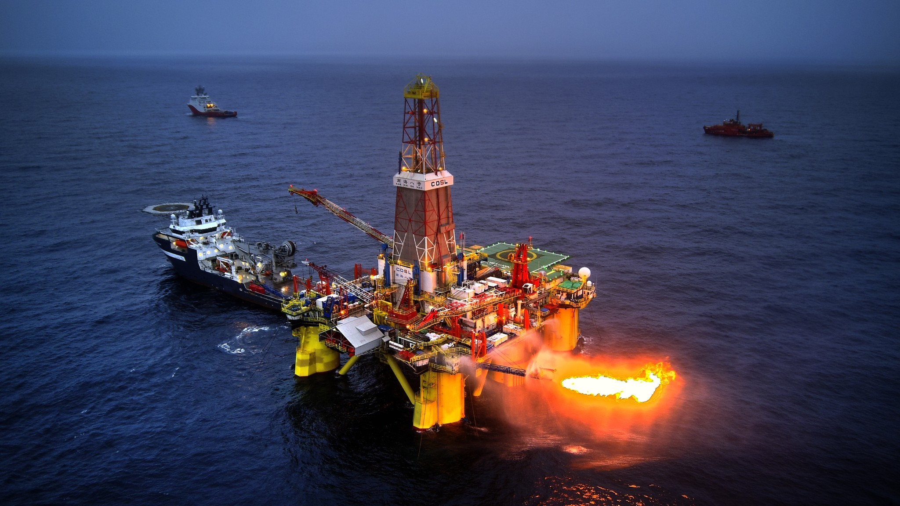
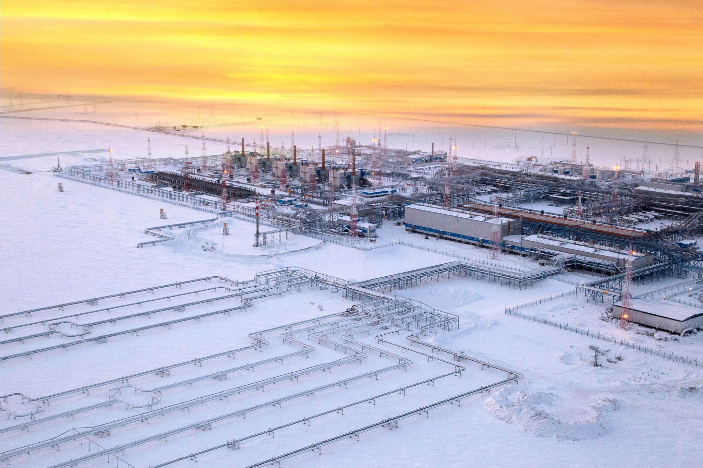
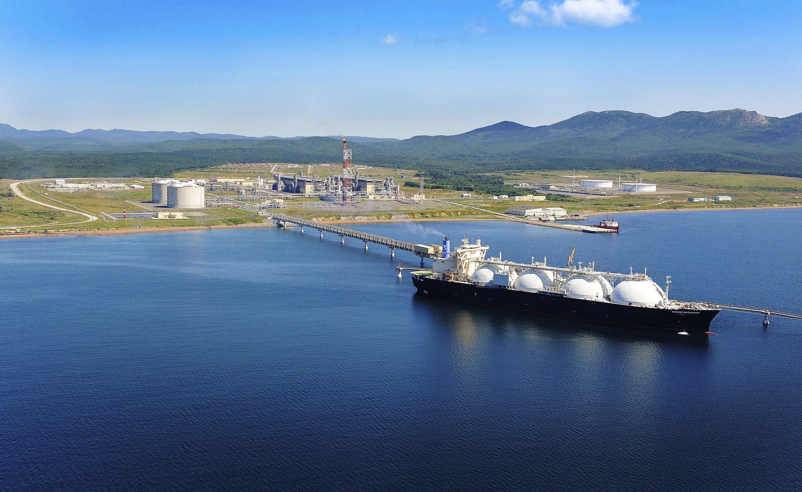
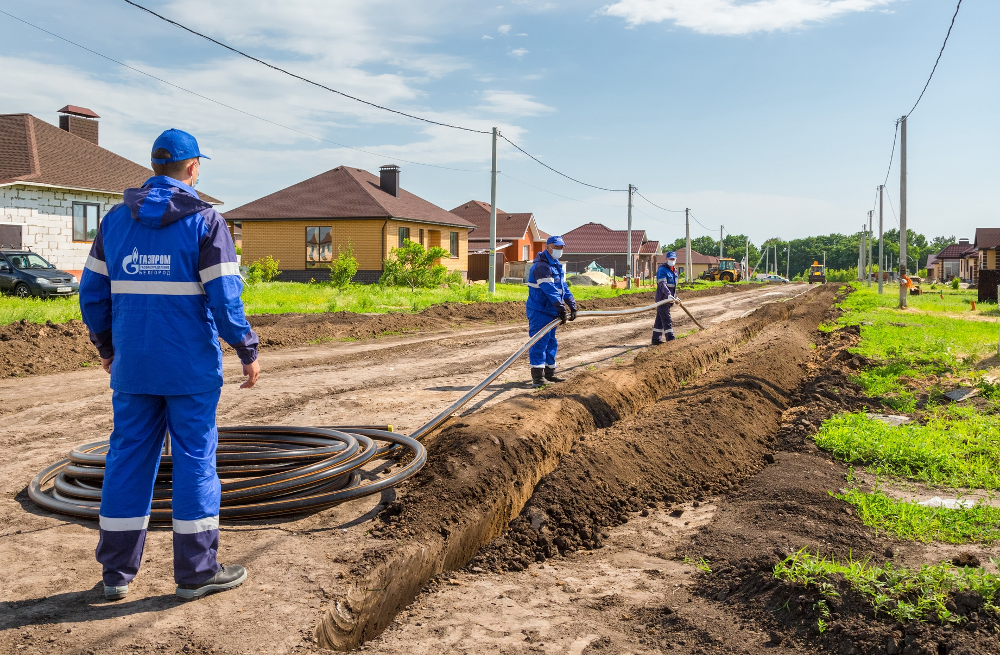

Газовый бизнес
Стратегической целью Группы «Газпром» в газовом бизнесе является сохранение статуса лидера среди глобальных нефтегазовых компаний путем диверсификации рынков сбыта и форм поставки природного газа и продуктов его переработки, обеспечения надежности газоснабжения потребителей, повышения эффективности и масштаба деятельности, развития научного, технико-технологического и кадрового потенциала.
Разведка и добыча
- Стратегические приоритеты:
- формирование центров газодобычи на Востоке России;
- вовлечение в разработку уникальных и крупных месторождений полуострова Ямал;
- ввод в разработку новых месторождений Надым-Пур-Тазовского региона;
- доразведка в глубокозалегающих ачимовских и юрских отложениях, а также в надсеноманском комплексе на разрабатываемых месторождениях в Ямало-Ненецком автономном округе (ЯНАО);
- вовлечение в разработку месторождений континентального шельфа северных морей.

Геологоразведочные работы на шельфе Карского моря
- Задачи на среднесрочную перспективу:
- обеспечение расширенного воспроизводства минерально-сырьевой базы;
- продолжение работы по формированию новых центров газодобычи на территории России;
- реконструкция и техническое перевооружение действующих объектов добычи газа для поддержания проектных уровней добычи.

Геологоразведочные работы на шельфе Карского моря
Поставка газа
- Стратегические приоритеты:
- развитие газоснабжения и газификации Российской Федерации;
- развитие внутреннего рынка газомоторного топлива (ГМТ) и газозаправочной инфраструктуры на территории Российской Федерации;
- диверсификация направлений экспорта за счет поставок СПГ на рынки, не имеющие возможности импорта российского трубопроводного газа
- рост поставок газа на международные рынки за счет развития производства и торговли СПГ.

Производственный комплекс «Пригородное» проекта «Сахалин-2»
- Задача на среднесрочную перспективу:
- выполнение программ развития газоснабжения и газификации регионов Российской Федерации на период 2021–2025 гг.;
- развитие рынка ГМТ в России.

Завершение строительства подземного газопровода в Белгородской области
Поделиться: